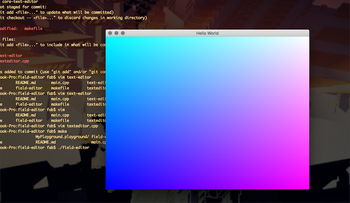

I've started working on a new project this week. In a nutshell it's a 3D modelling tool I envision with a UI similar to a stripped down version of Maya or Cinema4D (ie. place 3D primitives in the scene, perform operations on them, etc). For now I'm working on an OSX implementation though most of the code should be platform independant. If I achieve enough milestones and if there's a demand for it I might work on implementing Linux and Windows clients. Who knows, maybe I'll go nuts and make an Android one given it's closer to my professional experience.
Here's what I've managed to put together in the few hours spent working on it:
What you're looking at is a window whose viewport is fully covered with two triangles. These triangles are then getting passed through OpenGL's rendering pipeline up all the way into a GLSL fragment shader which ultimately determines the colour of each individual pixel in the window. The code that determines the colour of each pixel is what I'll be using to render entire scenes set up through the application's GUI (ie. I'll be generating code dynamically and recompiling the GLSL shader on the fly every time the user makes changes to the 3D scene).
What I'm looking to do next is add a simple text editor to modify the shader code being run in this window. This is the current stumbling block I'm running up against - it seems the way to go is to use Apple's Cocoa framework / Objective-C++ to put that portion of the application together. I've never used the language or framework so progress on that front will be a bit slower as I learn my way through it.
I've put together a rough set of milestones for the next few months to set out a direction for the project.
I've unfortunately got final exams this semester until December 22nd (grrrr UWaterloo) so serious work on this project is likely to only get started early January.